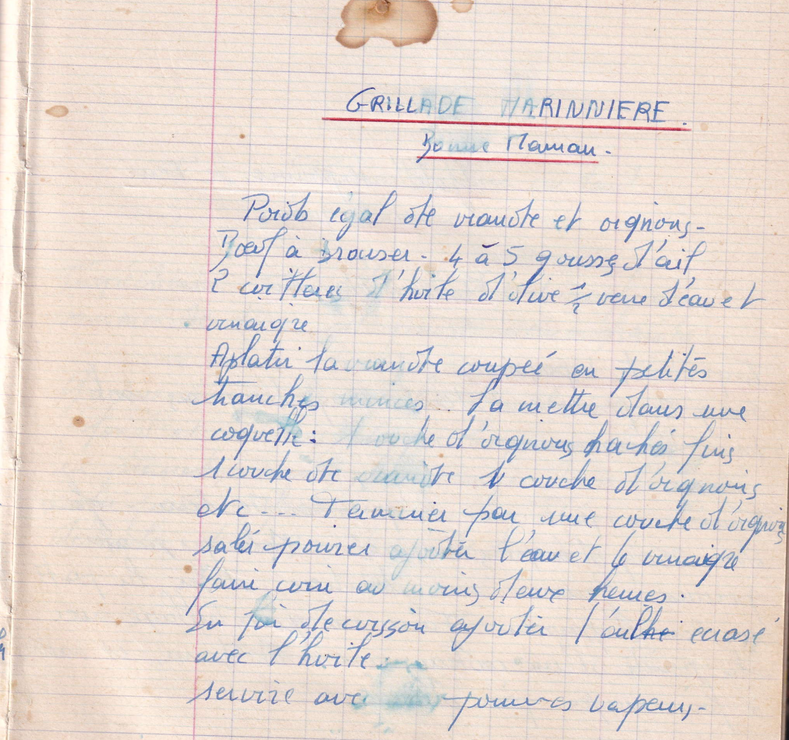

Grillade marinière
Bonne maman

LISTE DES INGREDIENTS
- Poids égal de viande et oignons
- Boeuf à braiser
- 4 à 5 gousses d'ail
- 2 cuillères d'huile d'olive
- 1/2 verre d'eau et vinaigre
PREPARATION
- Aplatir la viande coupée en petites tranches minces
- La mettre dans une coquelle: 1 couche d'oignons puis 1 couche de viande 1 couche d'oignons etc ...
- Terminer par une couche d'oignons
- Saler et poivrer, ajouter l'eau et le vinaigre
- Faire cuire au moins deux heures
- Sur fin de cuisson ajouter l'ail écrasé avec l'huile
- Servir avec pommes vapeurs